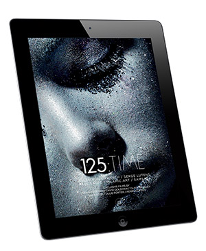

We're hiring! New Business Development Sales.
20th January 2016
Salary:Available on request
Description
Apptitude Media, an award-winning digital media company, is looking for an ambitious, tenacious and self-motivated sales professional to develop new business and sell across our expanding British Journal of Photography portfolio in print, digital, social, video and events, with a particular focus on events sponsorship and branded content opportunities. The candidate will be expected to research and build a client base outside of the photographic sector, generate leads, close new business and work proactively within the team on key events throughout the year. The role will be both phone based and client facing, whilst supporting the wider Apptitude Media portfolio sales team.
Key Competencies:
- A self-sufficient and results-driven self-starter, with the confidence to represent the business by going out into new markets and taking on new challenges on a regular basis.
- Consistently hitting call targets and individual financial targets.
- An ability to tailor creative packages to suit the needs of individual clients of any genre.
- Proactively seek out new clients across all sectors through telephone conversations, social networking functions and meetings. This may require travel within the UK.
- Manage accounts to ensure delivery of clients’ objectives and put customer service at the heart of ongoing client care.
- Sell and generate leads over the telephone, as well as face to face.
- A motivated quick learner, able to multi-task and prioritise a busy workload. Candidates must also be punctual, honest and reliable.
- A sound understanding of technology, with a working knowledge of Word and Excel, and diligent use of a CRM system.
- Confident communication skills – in oral and written communication, presentation, negotiation, telephone and listening skills.
- A minimum of 5 years’ experience in a media sales and/or business development position
Contact Monica Chopra – Advertising Manager
monica.chopra@apptitudemedia.co.uk
020 7193 6763.
British Journal of Photography and World Photography Organisation announce partnership
3rd June 2015
British Journal of Photography is pleased to announce an exclusive UK media partnership with the World Photography Organisation, to coincide with the opening of the 2016 Sony World Photography Awards.
The winner of the Student Focus strand of the Sony award will be featured at BJP online and have the chance to share their work through BJP's popular Instagram feed.
The ninth edition of the awards remain free to enter, and are spread across five separate competitions: Professional, Open, Youth, National and Student Focus. Last year, the awards attracted 173, 444 entries from 171 countries.
BJP Breakthrough sessions at Free Range 2015 - 12th to 22nd June 2015
28th May 2015
In two weeks time British Journal of Photography will host BJP Breakthrough at the Free Range Graduate Shows, a season of awards and events helping students and recent graduates make it in the professional photography industry.
Join us at Shop 13 where you can see the Breakthrough Photography Awards showcase, attend our free talks and workshops from leading industry names, and browse our BJP magazine library and pop-up shop.
Shop 13, Ely's Yard, 15 Hanbury Street, London, E1 6QR
24th May 2015
The winners of the BJP Breakthrough Photography Awards have been announced! The competition, open to photography students and recent graduates from around the world, received over 1000 entries from 46 countries.
The winners of each category were selected by a panel of leading industry figures including British Journal of Photography editor Simon Bainbridge, award-winning photographer Laura Pannack, artist Lewis Chaplin and freelance photography writer Gemma Padley.
Read more about the winners and where to see the work being exhibited here.
22nd May 2015
Apptitude Media is pleased to announce a new website for its flagship title, British Journal of Photography. The new site is fully responsive, rendering beautifully on all touchscreen devices, and places simplicity at the heart of the user experience.
A new role has been created to complete the recent investment in BJP's digital channels, and Tom Seymour was recently appointed as Online and Social Media Editor. Amongst other things he is overseeing the creation of a bespoke video channel, with editorial videos being commissioned on a regular basis. Tom is also tasked with building on BJP's position as the most popular professional photography community in the world on Facebook, expected to reach 450,000 followers this month, and growing other important social media channels. Find out more at www.bjp-online.com.
Apptitude Media Trading Update
20th May 2015
Apptitude Media has recently posted its second annual set of accounts, since its inception in 2013. Reported turnover is up by 24% to £1.17m, and gross profit up 580% to £316k. The business posted an overall operating loss of -£100k in 2014 and is on track for a profitable 2015, its third full year of trading. Recent investments in digitizing the British Journal of Photography archive and relaunching BJP's website are expected to come to fruition in 2015, and the business has recently made appointments in both the events and digital areas to strengthen its position in the market and capitalise on new trends and opportunities.
PPA New Talent Awards - Apptitude wins Sales Team of the Year
10th March 2015
Apptitude Media is proud to announce that the British Journal of Photography sales team were today crowned Sales Team of the Year at the PPA New Talent Awards 2015.
"It is a real accolade for our sales team to win this award", said Marc Hartog, CEO and founder, "especially when up against some of the biggest publishers in the country such as Time Inc, Dennis, Immediate and Haymarket."
10th October 2014
Apptitude Media is sad to announce that the next issue of fltr, the weekly iPhone magazine, will be the last.
When we launched fltr we wanted to create a publication that would do justice to the groundswell of talented people taking great photos using their smartphones, by highlighting their very best work and interviewing the photographers who were leading this new movement. We hope we’ve achieved this aim, and we’re very proud of the many great articles, and even more great photos, that we’ve published in fltr’s 44 issues to date.
However, despite many loyal readers and commercial support, fltr has not grown enough to support producing the kind of quality journalism we want to publish on an ongoing basis. And, although it would be simple to cut costs and keep publishing something of a lower quality, we’d rather admit that fltr was a bold experiment that didn’t work out.
Issue 44 of fltr will be the last published, and the app will be taken off-sale at the end of October. Those who have the app will be able to download back-issues until the end of 2014. Current subscribers will be offered a subscription to the British Journal of Photography’s dedicated iPhone edition, which is published weekly.
We’d like to thank everyone who has contributed to fltr over the past year, from our talented writers and editors to our featured photographers and everyone who downloaded the magazine, and we look forward to seeing where smartphone photography will go in the years to come - even if we’re not the ones reporting on it.
IMAGE MAGAZINE RELAUNCHES: A NEW EXPERIENCE FROM THE PUBLISHERS OF BRITISH JOURNAL OF PHOTOGRAPHY
London, 5th June 2014
Image, the Association of Photographers' magazine, relaunches for the iPad today. Published by Apptitude Media Ltd under contract to the AOP, the new-look Image is created by the team behind award-winning British Journal of Photography. Aimed at image-makers in advertising, editorial and design, Image is about both art and commerce, and celebrates visual elan and creative business solutions.
CEO of Apptitude Media Marc Hartog states: "Apptitude Media is delighted to work with the Association of Photographers to bring Image magazine to life on the Mag+ platform. The forward-thinking AOP team have understood that the formerly printed members' magazine reinvented as a bespoke and compelling digital version provides immense opportunity to expand the global membership base and delight readers around the world with high-quality content. We are at the beginning of the biggest change to how people consume content in a generation, and it is innovation such as this that will encourage adoption by both readers and advertisers."
Michael Harvey, Member Director of the AOP, adds: "In an ever-changing media landscape, it is vital for visual brands to evolve with innovative ways to engage readers and showcase amazing content. The Apptitude Media team have been instrumental in bringing Image to life in an interactive touchscreen environment, embedding social media and live news into the heart of our dynamic new app for aspiring and professional photographers internationally."
Features from the launch issue include clothes label Wren, the brand behind the viral video phenomenon First Kiss; Magnum photographers Peter Marlow, Harry Gruyaert and Paolo Pellegrin on commission for Telecom Italia's Rozzano Data Centre; and Erik Kessels, founder of KesselsKramer ad agency.
The first issue is free to download today from the App Store. A preview video is available here.
Images are available on request.
Notes to Editors
About Image
Image is the Association of Photographers' quarterly in-house journal, featuring commissioned images from the UK and beyond. Aimed at image-makers in advertising, editorial and design, Image is about both art and commerce, and celebrates visual elan and creative business solutions.
About the Association of Photographers
The AOP has been an integral part of the photographic industry since the Association was formed in 1968. Renowned for their work in protecting photographers' rights and educating the wider population on copyright issues, the AOP has played a crucial part in the development and promotion of many creative photographers. Today the AOP has over 1,000 members, including photographers and photographic assistants covering advertising, fashion, editorial, architectural and design sectors, and is supported by photographers' agents, educational establishments, manufacturers and suppliers of photographic equipment and services. To contact the AOP, please email info@aophoto.co.uk or call 020 7739 6669.
About Apptitude Media
Based in London, Apptitude Media publishes award-winning magazines on tablet devices, smartphones and in print, including British Journal of Photography and Popular Science UK.
Apptitude Studio is the creative services arm and helps other creators of print products make the transition to bespoke, reimagined digital products. The Studio also offers a full digital contract publishing service. Apptitude Media has been appointed as the primary UK agent for the Mag+ system. For more information, visit www.apptitidemedia.co.uk and www.apptitudestudio.com
About British Journal of Photography
Established in 1854, British Journal of Photography is the world’s longest-running and most influential photography magazine, defining the future of contemporary photography. It is available as a premium-quality monthly print magazine worldwide, and is also available online, on the iPad and for the iPhone. British Journal of Photography is the largest photography magazine in the world on Facebook, and has a combined social media reach of over 300,000 followers. In 2013, British Journal of Photography won numerous awards, including App of the Year at the PPA Digital Publishing Awards, and Most Effective Tablet Application at the Effective Mobile Marketing Awards. It was also named Photography Magazine of the Year at the 2012 Lucie Awards.
About Mag+
Mag+ is a complete digital publishing ecosystem comprised of a plug-in for InDesign CS4-CC, a powerful web-based backend, and white-labeled reader apps for iOS, Android and Kindle devices. Mag+ pioneered touchscreen publishing on the first iPad and remains the fastest, simplest publishing platform for creating content optimized for mobile devices, without the need for programming skills. For those creating custom mobile apps, the Mag+ App SDK allows developers to build on top of our core components, saving hundreds of man-hours of coding.
From publishers to catalogue marketers, design agencies and app developers, Mag+ is ideal for anyone wanting to bring beautiful, immersive content to the millions using the new generation of digital devices. Clients in a range of industries have now built more than 3000 innovative apps, including Maserati, Unilever, Boohoo.com, New York Magazine and Hemispheres (United Airlines). Mag+ also offers consultancy and creative services in the UK via www.apptitudestudio.com
For more information, please contact:
Diane Smyth, editor of Image, on 020 7193 0886 or diane.smyth@apptitudemedia.co.uk
Apptitude Studio relaunches Investment Europe Magazine for the iPad
London, 10th March 2014
Investment Europe, a leading magazine for fund selectors and investment professionals across Europe, has launched a new version of its iPad edition.
Investment Europe has been available as an app since 2012. Now, as a result of further investment from Open Door Media Publishing Ltd, it has been redesigned and relaunched by the Apptitude Studio team, who have spent the last six months reworking the design and functionality to improve the reader experience.
There is a natural affinity between the two businesses, as Apptitude was formed by Incisive Media's former Finance Director, Marc Hartog, following a management buyout of British Journal of Photography magazine in February 2013, and Open Door Media was formed by one of Incisive Media's founders, Nick Rapley, who led a separate buyout of Investment Europe later that year. Incisive Media has invested in both businesses and the relationship between the three enterprises remains strong.
Using the Mag+ platform, the new-look Investment Europe app is dynamic and interactive. Readers can pull, swipe and pinch content, and product providers can make their marketing interactive or more valuable by embedding video of their fund manager, or pdfs of their fund fact sheets, for example.
CEO of Apptitude Studio Marc Hartog states: "We are delighted to work with Investment Europe to help bring the magazine to life on the Mag+ platform. The forward-thinking Open Door Media team have taken their previously flat replica and applied a bespoke design with just the right amount of interactive elements to create a really compelling digital version of the magazine. We are at the beginning of the biggest change to how people consume content in a generation, and it is innovation like this that will encourage adoption by both readers and advertisers."
Nick Rapley, CEO of Open Door Media Publishing, adds: "In an ever-changing media landscape, it is vital for B2B brands to evolve with innovative ways to engage readers and showcase advertisers. The Apptitude Studio team have been instrumental in bringing Investment Europe magazine to life in an interactive touchscreen environment, embedding social media and live news into the heart of our dynamic new app for fund selectors and investment professionals across Europe."
The Investment Europe app is available now on the App Store. For more information, please visit www.investmenteurope.net
We Are Hiring
London, 17 January 2014
Business Development Manager
We are looking for a creative and independent sales professional to help grow our digital contract publishing and app-creation business. The successful candidate will be expected to research the market, generate leads, close new business deals and work proactively with the commercial manager to hit budgets. You must be confident dealing with small business and West End agencies, as well as large Blue Chip clients.
Experience in building new business relationships and a proven record in consistently beating targets is essential.
Sales Executive – advertising media sales
The successful candidate will be expected to research the market, generate leads, close new business and work proactively with the team on new launches and creative concepts. The candidate will be required to generate revenue via leads from our existing client base, as well as sourcing new clients, target markets and revenue streams. The role will initially be largely phone based, supporting the Apptitude Media portfolio sales team.
Some media sales experience is essential, as well as a proven record in consistently beating sales targets.
Account Executive – digital software sales
We are looking for an account executive to drive sales of the Mag+ digital publishing platform, a state-of-the-art suite for publishing creative content on touchscreen tablets. The right candidate will be able to sell the benefits of various product components, ranging from creative tools and an app framework to a full publishing ecosystem.
A passion for technology and proven sales success is essential.
Interested canditates are asked to email workwithus@apptitudemedia.co.uk with a CV and covering letter in the first instance.
Apptitude Media launches FLTR: the world’s first smartphone photography magazine
London, 16 December 2013

From the creators of British Journal of Photography, iPhone magazine FLTR applies established multi award-winning expertise to smartphone photography, inspiring the next generation of digital image creators.
London 16th December 2013: FLTR, the world’s first-ever weekly magazine dedicated to smartphone photography and published exclusively on the iPhone, has launched today on Apple’s App Store.
Created by the team behind the multi award-winning British Journal of Photography magazine, FLTR is designed to be an authoritative voice within the booming worldwide community of smartphone image creators, including exclusive interviews with both amateur and professional photographers highlighting the latest techniques, apps, devices, trends and accessories in smartphone photography.
Issue one of FLTR features a thought-provoking article by Fred Ritchin, professor of photography and imaging at New York University and former picture editor of The New York Times Magazine, writing about the incredible impact smartphones would have had during a traumatic event such as the 9/11 attacks on New York and Washington DC. Further pieces include an interview with Instagram superstar VuThéara Kham, one of the most popular French Instagrammers, including his tips for budding smartphone photographers. There is a look at the photo-sharing and discovery app EyeEm and a Christmas gift guide suggesting the perfect ingredients for professional looking smartphone photography.
Available to download from the Apple App Store from today, and then every week, FLTR is built on the Mag+ platform creating a clean, intuitive, user interface bespoke for the iPhone. Edited by Olivier Laurent, associate editor of British Journal of Photography, FLTR will encourage readers to engage with the brand and each other to decide what content to showcase and give them the opportunity to be published within the magazine.
FLTR is designed to engage with an audience of passionate smartphone photographers, eager to develop their skills and learn about products that will help improve their images. It will provide a unique opportunity for dedicated smartphone accessory manufacturers, photography app developers, mobile photography agencies and other brands to engage with a young, socially aware, tech-savvy audience through advertising.
FLTR will kick off from today by offering a no risk trial of 5 FREE issues*. Thereafter, the special launch deal continues with an offer of 60% off the standard price, at ONLY 27p ($0.38) an issue.
Olivier Laurent, Editor of FLTR, said: “The iPhone has transformed and democratised photography – turning all of us into potential photographers. It is estimated that more than 880 billion images will be taken over the next 12 months, and smartphones will play a leading role in the production and distribution of these images. FLTR is designed specifically to offer a new breed of photographers a weekly dose of authoritative content and advice to help them take their photography to the next level, while also chronicling the massive changes we're also experiencing, thanks to the ubiquitous nature of the smartphone.”
Marc Hartog, CEO of Apptitude Media, said: “It is an exciting development as a publisher to create a bespoke publication built around smartphone photography that is designed for, and distributed on, the same device. We were fortunate to work with Mag+ to develop FLTR, which allowed us to create it on the most powerful, flexible and cost-effective digital publishing platform in the world. Building on the heritage of British Journal of Photography, FLTR will sit at the intersection of smartphone photography and high value social media content.”
For further information on FLTR please contact davidf@wcommunications.co.uk / 07909 532 722
BJP Unveils New Website
London, 13 December 2013
We are proud to announce the redesign of British Journal of Photography's website at bjp-online.com. Olivier Laurent, associate editor of the magazine, states: "The new British Journal of Photography website is putting content front and centre, with a large emphasis on what is essential for our publication - images."
Digital Magazine Awards 2013
London, 1 November 2013
Apptitude Media is proud to announce that it has been nominated for another two awards, this time at the Digital Magazine Awards 2013. CEO Marc Hartog is up for Publisher/Manager of the Year, and the British Journal of Photography+ is in the running for Visual Arts Magazine of the Year.
Congratulations also to Apptitude client 442 Sports Marketing, whose Mag+ app QPR, The Insider has been shortlisted in the Sport, Health and Fitness category. The Insider is available on iPad, Android and Kindle tablets; Apptitude provided technical assistance with the launch.
British Journal of Photography wins App of the Year and hits 100,000 'Likes' on Facebook
London, 19th September 2013
Apptitude Media is delighted to announce that the British Journal of Photography iPad app has won App of the Year (Consumer) at this year’s PPA Digital Media Awards, beating stiff competition from publishing giants including Dennis Publishing, Bauer Media and IPC Media.
Described by the PPA as “a beautifully intuitive app that intelligently uses extra functionality to delight its users”, this is a great achievement for Apptitude Media, as it comes only seven months after the start-up acquired the 160-year-old brand in a management buyout from its former publisher Incisive Media.
The same day, British Journal of Photography hit 100,000 'Likes' on Facebook. Olivier Laurent, acting deputy editor, states: “British Journal of Photography was one of the first photography magazines to join Facebook, and over the past three years it has grown exponentially, reaching a diverse following of fans that today number more than 100,000. BJP is truly a global brand, with an engaged community of photographers – amateurs and professionals alike."
CEO of Apptitude Media, Marc Hartog, who also won Publishing Innovator of the Year at the PPA Awards earlier this year, states: “I am really proud of the team. We are starting to realise our ambition for BJP: publishing a niche, UK-based magazine as an independent start-up and winning the kind of industry recognition lavished on some of the bigger, more established players. And realising that we are the most popular photography magazine in the world on Facebook, in the same week as winning App of the Year, is the icing on the cake."
The award-winning niche magazine has transformed its fortunes with the introduction of a custom-made app for the iPad, built on the Mag+ platform. Since launching the app in September 2011, British Journal of Photography has more than doubled its paying subscriber base, and the app has to date been downloaded more than 270,000 times.
Introducing Subsplus
London, 6 September 2013
Today Apptitude is proud to unveil a new online service: Subsplus.
Subsplus is designed to work alongside the Mag+ platform. Where Mag+ makes it simple to create elegant publications and distribute them on tablets and phone devices, Subsplus allows app owners to manage access to those publications.
For magazine publishers, Subsplus manages subscriptions. Publishers can add subscribers online, either individually or in bulk, and those subscribers can then log in and download their issues instantly. It's ideal if you want to give free access to print subscribers, or offer complimentary copies to advertisers, freelancers or staff.
For enterprise app developers, Subsplus allows managers to control access to information on a per-user basis. A Mag+ enterprise app with Subsplus can be configured to show nothing until the user has logged in - at which point all relevant publications appear for download in their Library. Again, users can be added individually or in bulk.
The entire system is set-and-forget: once users or subscribers are added, Susbplus silently manages password resets and new content added to Mag+ Publish.
Subsplus is offered as a fully managed online service - no coding required - and can be added to a Mag+ app within 24 hours without an app update. For more information on features and pricing, please get in touch. Or, in the USA, contact your Mag+ representative.
Goodbye Soho, Hello Shoreditch
London, 29 July 2013
We're pleased to announce that the Apptitude Media team has moved into its new home in Shoreditch, London.
You can now find us at Ground Floor Unit A, Zetland House, 5-25 Scrutton Street, London EC2A 4HJ UK.
To find us on Google Maps, click here.
Apptitude CEO 'Innovator of the Year'
London, 20 June 2013
Marc Hartog, CEO and Founder of new digital media company Apptitude Media, last night won Publishing Innovator of the Year (Annual Turnover Under £10M) at the 2013 PPA Awards in London.
The PPA stated “Marc Hartog has been a huge driving force behind revolutionising the British Journal of Photography from a beautiful print magazine to a genuine multi-channel global brand. He quickly realised the title’s digital potential and turned it into a global opportunity, and has gone after each new opportunity with a rare single-minded focus. All of this, combined with his obvious passion for the brand, makes him a worthy winner of the Publishing Innovator of the Year award for 2013.”
Marc added "The PPA awards are the Oscars of our industry, so to be shortlisted was a great accolade in itself - to win against such stiff competition was both surprising and humbling. I am very honoured to receive the award and consider it recognition for everybody who is part of the Apptitude Media family and the whole British Journal of Photography team."
Under Marc’s leadership, the award-winning niche magazine transformed its fortunes with the introduction of a custom-made app for the iPad, built on the Mag+ platform. Since launching the app in September 2011, British Journal of Photography has more than doubled its paying subscriber base, and the app has now been downloaded over 200,000 times.
Marc successfully led a management buyout of the British Journal of Photography, which has been in print since 1854, from Incisive Media at the beginning of 2013, to form Apptitude Media, taking the team behind British Journal of Photography with him.
The team also recently launched a UK iPad edition of Popular Science, one of the most widely read publications in the world, and Fade To Black - a new quarterly magazine for the iPad focusing on independent film-making.
Other partnerships include cutting-edge fashion and lifestyle magazine 125, brought to the iPad for the first time. The creative arm of Apptitude Media, www.apptitudestudio.com offers the same award-winning expertise to clients of all genres, the most recent being the Sundance London iPhone app.
British Journal of Photography launches new universal BJP+ app with monthly, weekly iOS editions
London, 1 May 2013
British Journal of Photography has redesigned its iPhone and iPad apps, bringing its award-winning print content to readers all across the world. Now called British Journal of Photography+, the new universal iOS app offers a dedicated experience depending on the device used.
On the iPad, BJP is now offering a new monthly tablet edition that is closer in content to the print magazine, with the same features but enhanced with additional images, text and videos. Previously, BJP only offered a quarterly iPad edition, which will continue to be supported until the end of 2013.
On the iPhone, the magazine is now offering a weekly edition designed to bring you the best of the monthly edition in smaller, more frequent issues. "We've been working hard to find a way to re-imagine what we do for the smartphone, and we think we've got something different to offer - a more elegant solution to the iPhone magazine than anything else out there right now," says Marc Hartog, founder and CEO of Apptitude Media, BJP's publisher. "Eventually, this will be the place where you'll be able to read our articles first, before they are published in our print and tablet editions."
The app and the first iPad and iPhone issues are free, with subscription offers starting from £1.99 a month. iPad subscribers get free access to the iPhone issues, and BJP will soon offer bundled subscription offers to print subscribers.
For more information, please see www.bjpapp.com, or download BJP+ from the App Store.
Fade To Black launches at Sundance London
London, 25 April 2013
Fade to Black, Apptitude Media's new magazine dedicated to the convergence of film and photography, launched last night at a special screening of The Look of Love at Sundance London.
The screening was introduced by very special guest Robert Redford, and followed by a Q&A session with director Michael Winterbottom and an exclusive party.
Fade to Black was made available to download from the App Store at midnight on Wednesday, and has already reached the top of the iTunes charts in its category in several countries.
The app, and the first issue of this new quarterly magazine, are both free to download now. Apptitude Media also produced the 2013 digital event guide app for Sundance London.
Film. Photography. And everything in between – introducing Fade To Black
London, 24 April 2013
The team behind the award-winning British Journal of Photography are excited to announce the launch of an international quarterly magazine for the iPad, dedicated to a new generation of image-makers who embrace the convergence of photography, video and multimedia. Fade To Black hits the App Store today and the first issue is available to download free.
Featuring interviews with cutting-edge image-makers working in fields such as documentary, art video, music promos and drama, documentary, fashion film, music promos, art videos and shorts, alongside previews of the upcoming movies, festivals and exhibitions, Fade To Black champions the creative zeitgeist, showcasing the most exciting emerging independent talent.
“I believe we are at the beginning of a new era of free-thinking creativity,” says editor Simon Bainbridge. “Technology is a huge driver in all the changes we are witnessing. The arrival of HDSLR cameras and affordable editing software has brought cinematic quality filmmaking to the masses, and along with the emergence of crowd funding and view-on-demand networks, it’s never been as easy to make a movie. But it’s the ideas and storytelling skills of the photographers, directors, producers and cinematographers that makes for great art. That’s why our focus is on the creative impetus behind our featured projects, providing an insight into the ideas process behind the scenes”.
Like any good movie, Fade To Black has a beginning, middle and end; the first focused on agenda items for the spring ahead, while the middle is devoted to major profiles and features, and the end covering new trends and Q&As with the people who commission image-makers. For Issue #1, American artist Victoria Crayhon was commissioned to shoot a moving still for the cover, and inside there are interviews with fashion photographer turned filmmaker Elaine Constantine and Michael Najjar, the self-styled first artist into space, alongside Kelly Richardson, who talks about her hi-tech installation artworks, and Shaul Schwartz, whose first feature length documentary explores narco culture and the glorification of drugs lords in the Mexican badlands.
Built using the Mag+ platform, the magazine is optimised for Retina display, and includes navigational features designed to make best use of the iPad environment, learned from the highly acclaimed British Journal of Photography app.
Fade To Black can be downloaded free from the App Store.
The new magazine will officially launch at the Sundance London film and music festival, which takes place 25-28 April at The O2, for which Fade To Black is the official digital media partner. For more information on Sundance London visit www.sundance-london.com
Apptitude Media announces new creative studio and partnership with mobile app platform Mag+
London, 11 April 2013
Apptitude Media is proud to announce the launch of Apptitude Studio, the creative services arm of its award-winning digital publishing business. The new service will help clients bring their print and online content to life as immersive tablet and smartphone apps.
Apptitude Media was established by a team that has worked together for many years, with a portfolio that includes some of the most successful and revolutionary digital magazines in the industry, including British Journal of Photography and Popular Science UK. Other recent projects include the iPad edition of 125 Magazine and the Sundance London iPhone app.
In addition, Apptitude Media is pleased to announce that it is now the primary reseller for Mag+ in the UK, the company’s preferred app technology platform. CEO and Founder Marc Hartog says: “Having tested all the products that are available on the market, we selected Mag+ for our own award-winning titles as it is the most powerful, flexible and cost-effective platform on the market, with a very exciting roadmap for future developments.”
Gregg Hano, CEO of Mag+ adds “From the start the UK has been a key market for Mag+. We see a massive opportunity for the Mag+ brand, our publishing and enterprise customers, and major partners like Apptitude Media. When it comes to experience and ability to exploit the platform, Apptitude Media is unsurpassed.”
Using their collective experience in digital publishing, the team at the Apptitude Studio can create compelling and immersive content for smartphones and tablets, regardless of content type. As well as providing the licensing to the Mag+ platform, they also offer assistance with every stage of the digital production process - from a 'Quick Start' initial set-up to complete design, production, technical management, marketing, and publication services.
Apptitude Media will unveil its new services at three key industry events in April: The PPA’s Navigating the Digital Minefield; Mag+’s Appspresso app development workshop, London; and a Google and Press Gazette collaboration News on the Move, to be streamed live from 2pm today here.
For anyone interested in transforming a magazine, brochure, advert, catalogue, or report into an immersive experience on the iPad, iPhone or any other touchscreen device, please visit www.apptitudestudio.com
Sundance London - Out Now!
10 April 2013
We are pleased to announce that the Sundance London app is available now on the app store.
The app includes details of the entire Sundance London schedule, from films to music and more, with trailer videos and the option to book tickets online. It was designed and created in Mag+ by Apptitude, and is optimised for iPhone 4 and 5.
Apptitude's forthcoming publication Fade to Black, which celebrates film, photography, and everything in between, is an official media partner of Sundance London 2013. The festival runs from 25-28 April at the O2.
We Are Hiring
9 April 2013
We are looking for two ambitious, tenacious and self-motivated salespeople to sell across our growing portfolio of digital magazines: one Account Manager, and one Key Account Manager.
The successful candidates will be expected to research the market, generate leads, close new business and work proactively with the sales team on new launches and creative concepts. They will be required to generate revenue via leads from our existing client base, as well as sourcing new clients, target markets and revenue streams, and undertaking sales admin for the team.
Experience of selling consumer media products is essential, with digital tablet sponsorship and advertising sales experience being a strong preference. Experience in building new business relationships and a proven record in consistently beating targets is essential.
Competitive basic salary and OTE are negotiable for the right individuals.
Contact marc@apptitudemedia.co.uk with your CV or linkedin profile for more information.
Time Magazine lists BJP among the 140 best Twitter users of 2013
25 March 2013
The British Journal of Photography (@1854) has over 38,000 followers on Twitter, and today it was recognised by Time magazine as one of the 140 Best Twitter Feeds of 2013: "140 feeds that inspire us to laugh, learn or shake our heads in wonderment".
In its recommendation, Time noted the BJP's long history, and how the account "links to [BJP] content as well as other photography sources— covering a wide range of topics from camera gear and up-and-coming photographers to op-ed pieces about the future of photography."
Check out the BJP's entry, and the rest of the list, here.
125 Magazine launches Time issue on the iPad
25 March 2013

Apptitude Media is pleased to announce the release of the new 125 World app for iPad, and the new Time issue of 125 - both available now.
Last year the Apptitude team helped 125 bring its acclaimed Olympia issue to the tablet for the first time, free. The new 125 World app includes a copy of that issue, but also the new Time edition, which includes new film content from Dean Freeman, Perry Curties, Leandro Farina, Olivia Beasley, Ollie Porter, Uli Weber and David Goldman, plus stunning photo features and interviews.
For more information on 125 World, check out the website here. To see both issues for yourself, download the 125 World app here.
British Journal of Photography Shortlisted for Media Pioneer Award
17 March 2013
The British Journal of Photography has been shortlisted for a Media Pioneer Award following its successful quarterly iPad edition. The winners of the award, "designed to highlight innovation and entrepreneurial spirit in specialist consumer or b2b media, across print, web, digital or events", will be announced at the Specialist Media Show in London on the 24th of April.
British Journal of Photography announces new partnership with Positive View Foundation
14 March 2013
British Journal of Photography is delighted to announce that it has selected the Positive View Foundation as its philanthropic partner.
Launched in 2011, the Positive View Foundation has taken a unique approach to philanthropy, through a fruitful engagement with the world of photography, adding an exciting new dimension to the visual arts.
With an international scope, the Positive View Foundation’s major exhibitions have historical and contemporary elements, and showcase exceptional work from both masters of photography and rising talents. The Foundation's current exhibition, Landmark: the Fields of Photography, curated by William A. Ewing, is a sweeping overview of the rich genre of 21st century landscape photography and is running from 14 March to 28 April 2013 at Somerset House.
The Foundation is unique in being the only charity in the UK that establishes and promotes innovative photography through the Positive View Education Programme, with the aim of helping young people acquire the skills needed to achieve employment.
Simon Bainbridge, Editor of British Journal of Photography, comments: “We believe in the main goals of Positive View Foundation, which supports educational photography projects for disadvantaged young people, while aiming to raise the profile of contemporary photography in the UK by staging large-scale, thought-provoking exhibitions and encouraging debate about the medium. We are delighted to be given the opportunity to become the Foundation’s philanthropic partner, sharing our expertise as publishers and, in particular, our knowledge of apps. We look forward to developing our dialogue, with a view to exchanging ideas and opening up our networks, working towards our mutual benefit.”
Andrew Page, Founder and CEO of Positive View Foundation, adds: “We are thrilled to announce our Philanthropic and Media partnership with British Journal of Photography, one of the most established publications in photojournalism with an unrivalled and long-standing global reputation. Their engagement with the world of photography across a wide range of platforms will be invaluable to help promote and deliver the Foundation’s core objectives: to showcase exceptional photographic work and talents, to encourage debate about the medium and to promote educational photography projects for disadvantaged young people through the Positive View Education Programme. We look forward to a long and fruitful collaboration.”
Apptitude at PMA 2013
27 February 2013
Apptitude Media will be at the Publishing and Media Expo 2013 in London today, both on the show floor and participating in several events:
Digital Innovation Challenge
Apptitude CEO Marc Hartog will be acting as a 'dragon' at this event, which is hosted in association with Digital Shoreditch. He'll be on a panel reviewing pitches from the five finalists in this innovation competition - read about the products and all the panel members here.
How to Signpost and Merchandise your App
Both Marc and our Creative Director Mick Moore will be speaking at this keynote, held at 15.10 in the Digital and Multi-Publishing Theatre.
If you'd like to catch up with us at the show, please drop an email to hello@apptitudemedia.co.uk and we'll get in touch.
We are hiring
25 February 2013
Apptitude Media is looking for two senior sales professionals to sell our growing portfolio and develop our growing digital contract publishing business.
Business Development Manager
We are looking for an ambitious, agile and self-motivated senior sales professional to develop our digital contract publishing business. The successful candidate will be expected to research the market, generate leads, close new business and work proactively with the CEO as part of the management team on new launches and creative concepts.
You will be required to generate revenue via leads from our existing client base, as well as sourcing new clients, target markets and revenue streams. It is likely you will have at least 8-10 years of experience in lead sales positions with proven track record of innovation in sales, building new business relationships, growing revenues and consistently beating targets. Experience of developing a contract publishing business or a background in media are preferential but not essential.
Generous basic salary and substantial OTE are negotiable for the right individual.
Key Account Manager
We are looking for an ambitious, tenacious and target-driven sales professional to sell across our growing portfolio of digital magazines.
The successful candidate will be expected to research the market, generate leads, close new business and work proactively with the management team on new launches and creative concepts. You will be required to generate revenue from our existing client base, as well as sourcing new clients, market sectors and revenue streams.
Three years experience of selling consumer media products is essential, with digital tablet sponsorship and advertising sales experience being a very strong preference. Experience in building new business relationships, managing client accounts successfully and a proven record in consistently beating sales targets is an absolute must.
Competitive basic salary and OTE are negotiable for the right individual.
Interested canditates are asked to email workwithus@apptitudemedia.co.uk with a CV and covering letter in the first instance.
Apptitude Media | A shift in perspective
New digital media “start-up” with a 160 year old brand at its heart
LONDON, 05 February
Apptitude Media | A shift in perspective
New digital media “start-up” with a 160 year old brand at its heart
Launching today as a new digital media company, Apptitude Media has an award-winning portfolio, and promises to help-reinvent the magazine, combining old-world publishing expertise with a proven talent for publishing to tablets and smartphones.
Founder and CEO, Marc Hartog says: “We are at the very beginning of a publishing revolution. Magazines have been around for nearly 300 years, and they will be around for the next three centuries in one way or another, but what form they will take is being shaped right now.”
Marc successfully led a management buyout of the British Journal of Photography, which has been in print since 1854, from Incisive Media and has subsequently completed a first-round of investment to form Apptitude Media. Incisive Media are taking a minority stake in the new enterprise.
Apptitude Media comprises the team behind the British Journal of Photography (BJP), the award-winning niche magazine that transformed its fortunes with the introduction of a custom-made app for the iPad. Since launching the app in September 2011, BJP has more than doubled its paying subscriber base, and the app has now been downloaded over 200,000 times. The team also recently launched a UK iPad edition of Popular Science, one of the most widely read publications in the world. Other partnerships include cutting-edge fashion and lifestyle magazine 125, brought to the iPad for the first time.
Based in Soho, London, the fifteen strong team encompasses all areas of expertise in app publishing. According to Gregg Hano, CEO of Mag+ and former SVP of Bonnier corporation: “In my opinion the team are doing some of the best work in the digital publishing space, among the top 1% of digital publishers in the world.”
Apptitude Media offers a bespoke service consulting with publishers, blending creativity, visualisation and innovative technology to help them re-imagine their print titles as truly interactive digital magazines. From design through to app production, the Apptitude team will guide clients through the complex process of gaining compliance and approval for their apps, and advise them on how to market and sell their products via online retailers such as Apple’s Newsstand.
Apptitude Media is actively pursuing partnerships with any business looking to capitalise on the fast-growing readership opportunities offered by tablets and smartphones, and their global user base.
Marc concludes: "I am looking forward to working with a world class team, fresh ideas and new launches, working hard, having fun, and just being part of the most exciting time in publishing in a generation.”
To view the Apptitude Media portfolio, meet the team and find out more visit:
www.apptitudemedia.co.uk
Ends
Notes to Editors
About Apptitude Media
Based in the heart of London, Apptitude Media is a new digital media company, established by a team that has worked together for many years, with a portfolio that includes some of the most successful and revolutionary digital magazines in the industry. Apptitude publish award-winning magazines on tablet devices, smartphones and in print, and help other creators of print products to make the transition to bespoke, re-imagined digital products. Apptitude offers a full digital contract publishing service. For more information visit www.apptitudemedia.co.uk
About British Journal of Photography
Established in 1854, British Journal of Photography is the world’s longest-running and most influential photography magazine, defining the future of photographic journalism. It is available as a premium quality monthly magazine, across the UK and select cities in Europe, North America, the Far East and Australasia.
BJP was one of the first photography magazines to launch online, starting BJP-Online.com in 1997, now reaching more than 100,000 unique visitors per month, and is also available as an award-winning iPad app, as well as on the iPhone. BJP was awarded the title of “Photography Magazine of the Year” at the 2012 Lucie Awards. For the official Editor’s announcement visit: http://www.bjp-online.com/british-journal-of-photography/news/2241452/a-letter-from-the-editor
About Popular Science UK
Popular Science UK brings the in-depth features, science news and stunning multimedia of Popular Science to iPad users in the UK. All the gadget and product reviews are exclusively written for the UK market, and the Headlines section includes commentary on science and technology news as reported in the UK media. Visit www.popsciuk.com for more information.
About 125 Magazine
Created in 2003 as a showcase for new ideas in photography, fashion, art and visual culture, 125 is the only magazine in the world to act as a completely unbiased gallery space. Independently published twice a year, each issue is a 300 page tribute to creative freedom and the ultimate luxury magazine, giving a voice to emerging and established artists around the world. 125 is available in art galleries, fashion stores and from the best magazine retailers in 23 countries around the world and now also as an iPad app. Just like its print partner the 125 app is filled with unique work commissioned by the team so that every page offers something new and exclusive to its readers. Visit http://www.125magazine.com for more information.
About Incisive Media
Incisive Media is a leading global business information and events company. The company’s principal markets include financial services, legal and accounting services, marketing services, technology and risk management. Incisive Media's market-leading brands include, Investment Week, Legal Week, Post, Risk, FX Week, AVCJ, Professional Pensions, SES, clickz.com, Accountancy Age and V3.co.uk. It has offices in London, New York, Hong Kong, and Beijing. Visit www.incisivemedia.com for more information.
About Mag+
Mag+ (www.magplus.com) is the most flexible and efficient platform for publishing creative content on touchscreen tablets and smartphones. Mag+ premiered on the first iPads in April 2010 with the award-winning Popular Science+ application and now supports more than 600 apps from publishers and creatives around the globe including Mad Magazine, Hemispheres (United Airlines),Toyota, WebMD,Outside, MarieClaire and IDG. With its streamlined production system, powerful backend and feature-rich design framework, Mag+ is ideal for anyone — from magazine publishers to catalog marketers and design agencies — wanting to bring beautiful, immersive content to the millions who are using this new generation of digital devices. Mag+ is Apptitude’s preferred tablet publishing platform.
For media enquiries, please contact:
Marc Hartog, Founder and CEO of Apptitude Media at marc@apptitudemedia.co.uk or (+44 (0)20 7193 2654)
Our Manifesto
We love both print and digital publishing, but believe that the two are different and each requires a different approach.
Who We Are
We are a new publishing company, founded by the experienced team behind several award-winning publications.
What We Do
We publish award-winning magazines in print and on tablet and smartphone devices, and help other publishers make the leap from print to pixels.